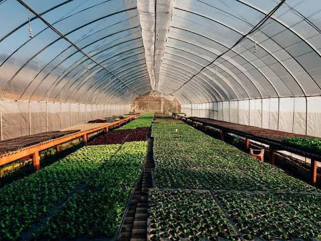

Aprendizaje
Podemos observar cómo nacen y crecen las plantas y aprender sobre sus necesidades.
Un espacio para aprender, cultivar y cuidar la naturaleza.
Conocé nuestro invernaderoEl invernadero es un espacio para aprender sobre las plantas, trabajar en equipo y conocer la importancia de cuidar la naturaleza.
Un invernadero es una estructura cubierta que permite cultivar plantas en un ambiente parcialmente controlado. Ayuda a proteger los cultivos del viento, la lluvia intensa y algunos cambios de temperatura.
Para que las plantas crezcan correctamente, es importante controlar el riego, la luz, la ventilación y la humedad.
Nuestro invernadero es un espacio del colegio destinado al cultivo de plantas y al aprendizaje sobre la naturaleza. Nos permite observar el crecimiento de los cultivos y conocer los cuidados que necesitan.
Podemos observar cómo nacen y crecen las plantas y aprender sobre sus necesidades.
Compartimos tareas y colaboramos para cuidar un espacio común.
Aprendemos la importancia del agua, el suelo y los seres vivos.
Esta imagen muestra un ejemplo de cómo puede ser un invernadero. Aunque no es el de nuestro colegio, nos permite conocer otro espacio destinado al cultivo de plantas.

Existen diferentes tipos de plantas que se pueden cultivar en un invernadero. Cada una necesita determinados cuidados para crecer de manera saludable.
El tomate necesita luz, agua y nutrientes para desarrollarse. Es una hortaliza muy utilizada en distintas comidas.
La lechuga es una hortaliza de hojas que necesita un riego adecuado y condiciones favorables para crecer.
La menta, la albahaca y el perejil son plantas aromáticas que se utilizan en diferentes comidas.
Estos son ejemplos de cultivos que pueden crecer en un invernadero. Las plantas que se cultiven dependerán de las posibilidades de nuestro colegio.
Para crecer sanas, las plantas necesitan cuidados que dependen de cada especie y de las condiciones del ambiente.
Es necesaria para el crecimiento. Hay que regar las plantas sin excederse.
Las plantas utilizan la luz para realizar la fotosíntesis y producir su alimento.
Un suelo adecuado proporciona nutrientes y permite que las raíces se desarrollen.
Renovar el aire ayuda a evitar el exceso de calor y humedad.
En nuestro proyecto podemos realizar distintas actividades para aprender de manera práctica.
El invernadero nos ayuda a comprender la importancia de cuidar los recursos naturales y respetar a los seres vivos. También podemos aprender a utilizar el agua de manera responsable y reducir los residuos.
Las plantas utilizan la energía de la luz, el agua y el dióxido de carbono para producir azúcares. Durante este proceso liberan oxígeno.
Cuando las condiciones son adecuadas, una semilla puede germinar y dar origen a una nueva planta.
No todas las plantas necesitan la misma cantidad de agua, luz o espacio para crecer.
Este proyecto me parece interesante porque nos permite aprender de manera práctica y colaborar con otras personas.
El invernadero escolar es una oportunidad para aprender sobre las plantas, la responsabilidad y el trabajo en equipo. A través de su cuidado podemos comprender la importancia de respetar la naturaleza.
También nos enseña que, con dedicación y colaboración, podemos aprender cosas nuevas y cuidar mejor nuestro entorno.
Volver al inicio